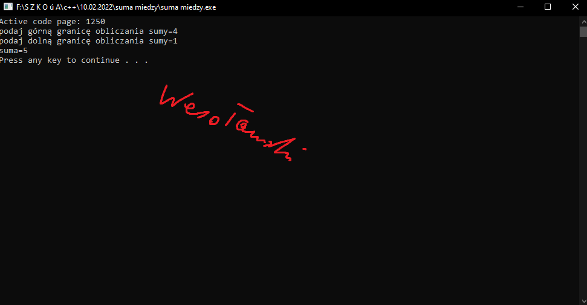

 #include <cstdlib> #include <iostream> using namespace std; int main(int argc, char *argv[]) { // treść zadania // wszystkie zmienne z trzema literami nazwiska system("chcp 1250"); int gora_wes; int dol_wes; cout<<"podaj górną granicę obliczania sumy="; cin>>gora_wes; cout<<"podaj dolną granicę obliczania sumy="; cin>>dol_wes; // zadeklaruj oraz dodaj dolną granicę obliczania sumy // dol_kow dodaj w pętli int suma_wes=-dol_wes; for (int i=dol_wes;i<=gora_wes-1;i++) { suma_wes=suma_wes+i; } cout<<"suma="<<suma_wes<<endl; system("PAUSE"); return EXIT_SUCCESS; } //Napisz program, który po wczytaniu dwóch liczb dol_trzy_litery i gora_trzy_litery //Obliczy sumę liczb między tymi liczbami. //Treść zadania wprowadź jako komentarz w zadaniu czyli // treść zadania